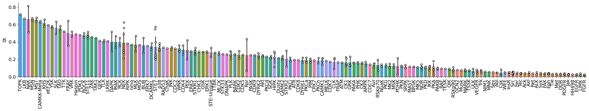

from katlas.core import *
import pandas as pdSTY composition
ref = pd.read_parquet('out/CDDM_pssms_LO_eval.parquet')ref2 =preprocess_ref(ref)info = Data.get_kinase_info().sort_values('kinase').drop_duplicates('uniprot')info['kinase_id'] = info['uniprot']+'_' + info['gene']# some are not in the kinome info
ref2[~ref2.index.isin(info.kinase_id)]| -20A | -20C | -20D | -20E | -20F | -20G | -20H | -20I | -20K | -20L | ... | 20Q | 20R | 20S | 20T | 20V | 20W | 20Y | 20s | 20t | 20y | |
|---|---|---|---|---|---|---|---|---|---|---|---|---|---|---|---|---|---|---|---|---|---|
| index | |||||||||||||||||||||
| P07948-2_LYN | -0.201025 | -0.563368 | -0.074525 | -0.276853 | 0.451878 | 0.212021 | -0.306423 | 0.321053 | 0.383523 | -0.119475 | ... | -0.457078 | -0.198480 | -0.486640 | 0.043253 | -0.611027 | 0.248941 | -0.522681 | -0.603284 | -0.501659 | 0.703503 |
| P05771-2_PRKCB | -0.378789 | -0.105544 | -0.414208 | -0.766561 | 0.469130 | -0.148789 | 1.248263 | 1.264304 | -1.293812 | -0.955833 | ... | -1.575331 | -0.418613 | -0.064964 | 0.312925 | 0.395611 | 0.787799 | -1.955805 | 0.418784 | -0.654678 | 0.035912 |
| Q13976-2_PRKG1 | 0.377940 | -20.551687 | 0.272132 | 0.693775 | -1.166458 | -0.992964 | -0.676831 | -0.271748 | -0.022510 | -0.591422 | ... | 0.315217 | 0.056898 | 0.258544 | -0.059560 | -0.228413 | 0.678348 | -1.480295 | 0.379722 | -1.179166 | 1.511422 |
| Q9NRA0_SPHK2 | 1.165531 | -20.551687 | -0.220384 | 0.123256 | -1.658974 | -0.807408 | 1.830652 | 0.498770 | -0.836954 | -0.083938 | ... | -1.138814 | 0.240296 | -0.365413 | 0.749442 | 0.317555 | 0.224317 | -0.934327 | 0.118335 | -0.633198 | 0.057392 |
| P48736_PIK3CG | 0.428566 | -20.551687 | 0.000830 | 0.666398 | -1.115832 | 0.057662 | -0.626205 | -0.543050 | 0.513543 | -22.986938 | ... | 1.268002 | -22.498627 | 0.555977 | -21.767089 | 0.694625 | -19.707253 | 0.665134 | -1.282202 | -0.033737 | -19.874178 |
5 rows × 943 columns
hue = hue.merge(info,left_on='index',right_on='uniprot')hue.set_index('kinase_id')['group']kinase_id
P12931_SRC TK
P29320_EPHA3 TK
P07332_FES TK
Q16288_NTRK3 TK
Q9UM73_ALK TK
...
Q15746_MYLK CAMK
Q01973_ROR1 TK
O14976_GAK Other
P15056_BRAF TKL
Q6P0Q8_MAST2 AGC
Name: group, Length: 330, dtype: objectref2| -20A | -20C | -20D | -20E | -20F | -20G | -20H | -20I | -20K | -20L | ... | 20Q | 20R | 20S | 20T | 20V | 20W | 20Y | 20s | 20t | 20y | |
|---|---|---|---|---|---|---|---|---|---|---|---|---|---|---|---|---|---|---|---|---|---|
| index | |||||||||||||||||||||
| P12931_SRC | -0.303165 | -0.374748 | 0.053554 | -0.168660 | 0.079632 | 0.214991 | -0.291338 | 0.351244 | 0.244339 | 0.005575 | ... | -0.228598 | 0.025968 | -0.328084 | 0.112171 | -0.368079 | -0.025931 | -0.102114 | -0.546950 | 0.073484 | 1.274269 |
| P29320_EPHA3 | -0.184360 | -0.772408 | 0.041784 | -0.335815 | 0.038333 | 0.361651 | -0.112498 | 0.240746 | 0.271984 | -0.137271 | ... | -0.387529 | -0.047099 | -0.814426 | -0.006232 | -0.171474 | -0.194322 | -0.031039 | -0.527715 | -0.113239 | 0.754229 |
| P07332_FES | -0.047304 | -0.668876 | 0.095709 | -0.338939 | 0.048756 | 0.238490 | -0.102075 | 0.353049 | 0.371674 | 0.065796 | ... | -0.164643 | -0.071350 | -0.644998 | 0.017345 | -0.382362 | -0.170745 | -0.106998 | -0.402258 | -0.220906 | 1.121760 |
| Q16288_NTRK3 | 0.004691 | 0.150181 | -0.006480 | -0.157199 | 0.057431 | 0.143462 | -0.424928 | 0.496946 | 0.519908 | -0.051274 | ... | -0.577591 | -0.125417 | -0.978218 | -0.241875 | -0.606648 | -0.214459 | -0.247573 | -0.779873 | -0.071975 | 0.803039 |
| Q9UM73_ALK | -0.027114 | 0.139216 | -0.115000 | -0.300995 | 0.428488 | 0.150419 | -0.326997 | 0.286672 | 0.400256 | -0.126111 | ... | -0.431957 | 0.125002 | -0.813833 | -0.317107 | -0.515009 | -0.224103 | -0.198324 | -0.467588 | -0.148733 | 0.849979 |
| ... | ... | ... | ... | ... | ... | ... | ... | ... | ... | ... | ... | ... | ... | ... | ... | ... | ... | ... | ... | ... | ... |
| Q15746_MYLK | 0.247994 | -20.551687 | -0.957350 | 1.123256 | 2.247916 | -0.222446 | -21.072348 | 0.498770 | -0.251992 | -0.498976 | ... | 0.147490 | -1.280754 | -0.079108 | -21.767089 | -22.421369 | -19.707253 | 0.351976 | 0.404639 | 0.653105 | -19.874178 |
| Q01973_ROR1 | -1.458959 | -20.551687 | -22.445312 | 0.416303 | -0.196003 | 0.655563 | -21.072348 | -0.623221 | -22.739954 | -0.620966 | ... | -22.070383 | -1.093127 | 2.108518 | -21.767089 | -1.015868 | -19.707253 | -20.865897 | 1.914194 | -20.564768 | 1.531322 |
| O14976_GAK | 1.165531 | -20.551687 | -0.039812 | -0.544169 | -0.156474 | -0.304908 | -21.072348 | -0.583692 | -22.739954 | -0.581438 | ... | -22.070383 | -1.171130 | -0.969484 | 0.560409 | -0.093871 | -19.707253 | -20.865897 | 0.514264 | 0.762730 | -19.874178 |
| P15056_BRAF | -0.497433 | -20.551687 | 0.882185 | 0.377829 | -21.561975 | -0.382911 | 0.255150 | -21.989192 | -1.412456 | 0.340559 | ... | -0.664883 | 0.491835 | 0.693481 | 1.223374 | 0.569094 | 1.698247 | -20.865897 | 0.592266 | -20.564768 | -19.874178 |
| Q6P0Q8_MAST2 | 0.050054 | -20.551687 | -0.155289 | 0.662282 | -0.271951 | 0.579615 | 3.025030 | -21.989192 | -1.449931 | -0.696915 | ... | -22.070383 | 2.037269 | -0.931010 | 1.183845 | 1.751958 | 3.243681 | -20.865897 | -0.447262 | -20.564768 | -19.874178 |
335 rows × 943 columns
pssms=pd.read_parquet('out/CDDM_pssms.parquet')pssms =preprocess_ref(pssms)pssms = pssms[['0s','0t','0y']]pssms_info = pssms.merge(hue,left_on='index',right_on='kinase_id')pssms_info.columnsIndex(['0s', '0t', '0y', 'index', 'kinase', 'ID_coral', 'uniprot', 'gene',
'modi_group', 'group', 'family', 'subfamily_coral', 'subfamily',
'in_pspa_st', 'in_pspa_tyr', 'in_pspa', 'in_cddm', 'kd_ID',
'active_D1_D2', 'active_kd_ID', 'pspa_ID', 'pseudo',
'pspa_category_small', 'pspa_category_big', 'cddm_big', 'cddm_small',
'length', 'human_uniprot_sequence', 'kinasecom_domain', 'nucleus',
'cytosol', 'cytoskeleton', 'plasma membrane', 'mitochondrion',
'Golgi apparatus', 'endoplasmic reticulum', 'vesicle', 'centrosome',
'aggresome', 'main_location', 'kinase_id'],
dtype='object')plot_bar(pssms_info,'0s','subfamily',figsize=(30,4))
plot_bar(pssms_info,'0y','subfamily',figsize=(30,4))
plot_bar(pssms_info,'0t','subfamily',figsize=(30,4))